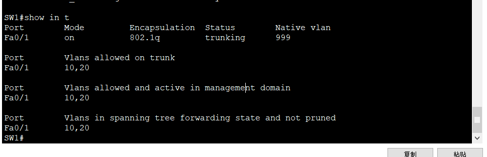
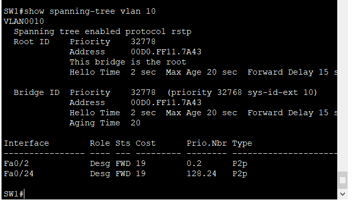
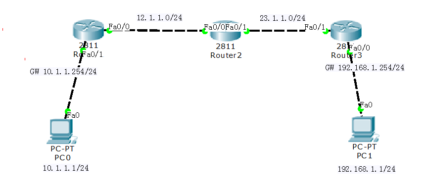
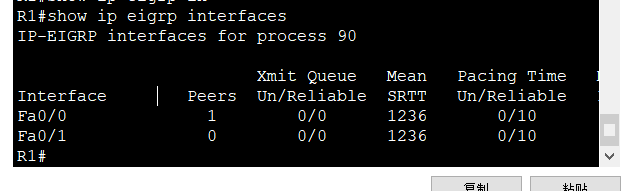
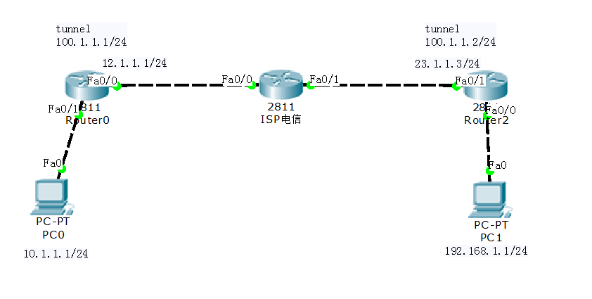

Cisco路由与交换实验
作业 1 安装Cisco Paket Tracer
一开始先安装Cisco Paket Tracer ，软件可以汉化，步骤如下：
步骤1
将解压文件中的”Chinese.ptl” 中文汉化文件复制到安装目录下的”language” 文件夹中。(默认的安装路径为: “C:\ProgramFiles (x86)\Cisco Packet Tracer 6.2sV\languages)。
步骤2
运行软件，在菜单栏中选择Options> Preferences, 然后在Interface选项卡下的”SelectLanguage”选择”Chinese.ptl” ，最后点击右下角的[Change Language]。之后关闭重启软件
重启软件之后的界面是这样的

画一个简单地拓扑图然后运行
作业 2 设置姓名和时间
拓扑图：
1.在 Packet tracer中设备的添加
2.PC可以通过console连接到路由器2811 Router0
3.修改设备2811 route0名字为 你的名字
1 | configure terminal |
4.修改设备时间为你做作业的当前时间
1 | clock timezone BJ 8 |
5.关闭DNS解析功能
1 | no ip domain-lookup |
6.查看配置
1 | show running-config |

作业 3 配置接口模式
拓扑图：
实验要求：
1.交换机F0/1接口和路由器Router0 F0/1接口配置双工模式为全双工，速率为100M
2.路由器分别配置地址，要求可以ping通
1 | R1 (config)#int f0/0 |
结果如下：
作业 4 配置IP和密码
拓扑图：
1.按照图示配置路由器接口和PC的地址及网关地址
Router0：
Router1：
PC：
2.Router1 可以通过telnet远程管理 Router0，远程登录的密码为 -你们的姓名。
3.Router0配置enable 密码，密码的格式为自动加密的密码
作业 5 静态路由
简介：路由器可以将不同网段之间的网络连接到一起，当路由器接收到数据包后要查看数据包中的目标IP，再检查自己的路由表，如果路由表中有和目标IP相匹配的路由条目，路由器才能将数据包按照该路由条目所指定的端口转发出去，实现不同网络之间的通信，那么路由器中的路由表是如何实现的呢？配置了路由器接口IP并为UP状态路由表中自动生成直连路由，对于非直连的路由，需通过静态路由管理员手工添加或通过配置动态路自动学习
拓扑图：
配置静态路由完成以下需求：
1.PC0可以访问PC1
1 | int f0/1 |
结果如下：
2.R1 可以访问R3的环回口地址，33.1.1.1/32
1 | R1: |
结果如下：
3.R3 可以访问R1的环回口地址，11.1.1.1/32
作业 6 VLAN和接口类型
简介：vlan技术是通过交换机上的端口进行划分不同的局域网，使得连接在同一个交换机的计算机实现计算机与计算机之间的隔离（不在同一个vlan中无法ping通），也可以使多个交换机进行网络划分。
拓扑图：
需求：
1.SW1 和SW2分别配置vlan 10，20。
1 | vlan 10 |
2.按照图示将接口划分到对应的vlan，链路类型为access
1 | int f0/23 |
3.F0/1接口链路类型为trunk，为了安全起见，只允许相对应的vlan通过
1 | int f0/1 |

结果：PC0可以访问PC2，PC1可以访问PC3
作业 7 单臂路由
简介：单臂路由（router-on-a-stick）是指在路由器的一个接口上通过配置子接口（或“逻辑接口”，并不存在真正物理接口）的方式，实现原来相互隔离的不同VLAN（虚拟局域网）之间的互联互通。
拓扑图：
需求：
1.PC的各自网关都在路由器上，要求PC之间能够相互访问。
1 | SW1： |
R1:
1 | int f0/1 |
作业 8 树模式
简介：计算机网络中，我们为了减少网络故障导致无法正常通信的问题，通常会增加冗余设备作为备用，形成冗余拓扑。但是也增加了冗余链路，这样却会引起交换环路，造成通信消息循环发送。交换环路会带来三个问题：广播风暴、同一帧的多个拷贝、交换机 CAM 表不稳定。所以，STP(生成树协议，Spanning Tree Protocol) 就是解决冗余拓扑出现的问题。STP 基本思路是阻断一些交换机接口，构建一棵没有环路的转发树，让具有冗余结构的网络在故障时自动调整网络的数据转发路径。STP 利用 BPDU(Bridge Protocol Data Unit)和其他交换机进行通信，从而确定哪个交换机该阻断哪个接口。
拓扑图：
需求：
1.交换机使能快速生成树模式
1 | int f0/24 |
1 | switchport mode access |
2.修改SW0为根交换机
1 | spanning-tree vlan 10 root primary |
3.修改SW1 的F0/2接口为根端口RP接口
1 | int f0/2 |

4.连接终端PC的接口使能边缘端口特性和开启BPDU保护功能
1 | int f0/24 |
结果：PC0可以pingPC1
作业 9 RIP协议
简介：RIP (Routing Information Protocol) 路由协议是一种相对古老，在小型以及同介质网络中得到了广泛应用的一种路由协议。RIP 采用距离向量算法，是一种距离向量协议。RIP在RFC 1058文档中定义。 RIP使用UDP报文交换路由信息，UDP端口号为520。若采用RIP协议，其网络内部所经过的链路数不能超过15，这使得RIP协议不适于大型网络。
RIP共有三个版本，RIPv1, RIPv2, RIPng，其中RIPV1和RIPV2是用在IPV4的网络环境里，RIPng是用在IPV6的网络环境里。
1 | 格式： |
RIPv1和RIPv2的区别：
1.RIPv1是有类路由协议，RIPv2是无类路由协议。
2.RIPv1不能支持VLSM，RIPv2可以支持VLSM。
3.RIPv1没有认证的功能，RIPv2可以支持认证，并且有明文和MD5两种认证。
4.RIPv1没有手工汇总的功能，RIPv2可以在关闭自动汇总的前提下，进行手工汇总。
5.RIPv1是广播更新，RIPv2是组播更新。
6.RIPv1对路由没有标记的功能，RIPv2可以对路由打标记（tag），用于过滤和做策略。
7.RIPv1发送的updata最多可以携带25条路由条目，RIPv2在有认证的情况下最多只能携带24条路由。
8.RIPv1发送的updata包里面没有next-hop属性，RIPv2有next-hop属性，可以用与路由更新的重定。
RIP-1~RIP-2的演变
RIP-1被提出较早，其中有许多缺陷。为了改善RIP-1的不足，在RFC1388中提出了改进的RIP-2，并在RFC1723和RFC2453中进行了修订。RIP-2定义了一套有效的改进方案，新的RIP-2支持子网路由选择，支持CIDR，支持组播，并提供了验证机制。
RIP的不足
当有多个网络时会出现环路问题。为了解决环路问题，IETF提出了分割范围方法，即路由器不可以通过它得知路由的接口去宣告路由。分割范围解决了两个路由器之间的路由环路问题，但不能防止3个或多个路由器形成路由环路。触发更新是解决环路问题的另一方法，它要求路由器在链路发生变化时立即传输它的路由表。这加速了网络的聚合，但容易产生广播泛滥。总之，环路问题的解决需要消耗一定的时间和带宽。若采用RIP协议，其网络内部所经过的链路数不能超过15，这使得RIP协议不适于大型网络。—-[RIP协议-百度百科](RIP协议_百度百科 (baidu.com))
拓扑图：

需求：
1.路由器使能rip协议，关闭自动汇总功能，版本为v2
1 | router rip |
结果：PC0可以pingPC1
作业 10 eigrp协议
简介：EIGRP（无类别距离矢量IGP协议）,有时也被描述成一个具有链路状态协议行为特性的距离矢量协议。距离矢量协议是路由器之间共享路由器所知道的所有信息，但仅仅限于在与之直连的邻居之间共享；而链路状态协议虽然只通告它们直连链路的信息，但是链路状态协议可以在它们的路由选择域或区域内的所有路由器上共享这些信息
eigrp的工作原理
1、启动配置完成后，邻居间使用hello包建立邻居关系，生成邻居表
2、邻居关系建立后，邻居间使用更新包共享路由信息，生成拓扑表（装载successor和FS）
3、默认将successor路径加载到路由表；收敛完成，hello包周期保活即可结构突变（初次收敛会面临结构突变）
4、新增网段：直连新增网段的设备，向所有邻居发送更新包，然后逐级收敛
5、断开网段：直连断开网段的设备，向所有邻居发送查询包来收敛该路径若该直连网段同时为本地某个目标的最佳路径，且没有备份路径，那么也进行查询收敛；若存在备份路径，那么仅收敛直连网段路由，启用备份路由来访问其他网段
6、无法沟通：hold time 到时间时，断开邻居关系，删除所有通过该邻居学习到的信息；能否重新建立邻居关系，取决于hello包
注：Query、Reply、Update包均基于RTP工作，必须被ACK确认、排序、流控‘；若没有ACK或数据校验将重传（默认最大重传16次）；16此后依然没有确认，将直接断开邻居关系；能否重新建邻取决于hello包
版权声明：本文为CSDN博主「枫林残忆YCY」的原创文章，遵循CC 4.0 BY-SA版权协议，转载请附上原文出处链接及本声明。
原文链接：https://blog.csdn.net/weixin_43265596/article/details/85799761
优点
（1）精确路由计算和多路由支持：EIGRP协议在路由计算中要对网络带宽、网络时延、信道占用率和信道可信度等因素作全面的综合考虑，所以EIGRP的路由计算更为准确，更能反映网络的实际情况。同时EIGRP协议支持多路由，使路由器可以按照不同的路径进行负载分担。
（2）较少带宽占用：EIGRP协议的对等路由器之间周期性的发送很小的hello报文，以此来保证从前发送报文的有效性。还可以对发送的EIGRP报文进行控制，减少EIGRP报文对接口带宽的占用率，从而避免连续大量发送路由报文而影响正常数据业务的事情发生。
（3）快速收敛：EIGRP协议由于使用了DUAL算法，使得EIGRP协议在路由计算中不可能有环路路由产生，同时路由计算的收敛时间也有很好的保证。
（4）配置简单：使用EIGRP协议组建网络，路由器配置非常简单，它没有复杂的区域设置，也无需针对不同网络接口类型实施不同的配置方法。
（5）路由聚合：EIGRP协议可以通过配置，对所有的EIGRP路由进行任意掩码长度的路由聚合，从而减少路由信息传输，节省带宽。
缺点
（1）定时发送HELLO报文：运行EIGRP的路由器之间必须通过定时发送HELLO报文来维持邻居关系，这种邻居关系即使在拨号网络上，也需要定时发送HELLO报文，这样在按需拨号的网络上，无法定位这是有用的业务报文还是EIGRP发送的定时探询报文，从而可能误触发按需拨号网络发起连接，尤其在备份网络上，引起不必要的麻烦。而OSPF可以提供对拨号网络按需拨号的支持，只用一种路由协议就可以满足各种专线或拨号网络应用的需求。
（2）基于分布式的DUAL算法：在活动路由的这次DUAL计算过程中，出现到该路由的后继（successor）的测量发生变化的情况，就会进入多重计算，这些都会影响DUAL算法的收敛速度。而OSPF算法则没有这种问题，所以从收敛速度上看，虽然整体相近，但在某种特殊情况下，EIGRP还有不理想的情况。
（3）EIGRP是Cisco公司的私有协议：如果要支持EIGRP协议需向Cisco公司购买相应版权，并且Cisco公司修改该协议没有义务通知任何其他厂家和使用该协议的用户。而OSPF是开放的协议，是IETF组织公布的标准。世界上主要的网络设备厂商都支持该协议，所以它的互操作性和可靠性由于公开而得到保障，并且在众多的厂商支持下，该协议也会不断走向更加完善。—[EIGRP协议—百度百科](EIGRP_百度百科 (baidu.com))
拓扑图：
需求：
1、配置EIGRP协议，要求PC0 可以ping访问PC1
1 | int f0/0 |


作业 11 OSPF协议
简介：OSPF协议是一种链路状态协议。每个路由器负责发现、维护与邻居的关系，并将已知的邻居列表和链路费用LSU(Link State Update)报文描述，通过可靠的泛洪与自治系统AS(Autonomous System)内的其他路由器周期性交互，学习到整个自治系统的网络拓扑结构;并通过自治系统边界的路由器注入其他AS的路由信息，从而得到整个Internet的路由信息。每隔一个特定时间或当链路状态发生变化时，重新生成LSA，路由器通过泛洪机制将新LSA通告出去，以便实现路由的实时更新。
ospf工作原理
1、初始化形成端口初始信息：在路由器初始化或网络结构发生变化(如链路发生变化，路由器新增或损坏)时，相关路由器会产生链路状态广播数据包LSA，该数据包里包含路由器上所有相连链路，也即为所有端口的状态信息。
2、路由器间通过泛洪(Floodingl机制交换链路状态信息：各路由器一方面将其LSA数据包传送给所有与其相邻的OSPF路由器，另一方面接收其相邻的OSPF路由器传来的LSA数据包，根据其更新自己的数据库。
3、形成稳定的区域拓扑结构数据库：OSPF路由协议通过泛洪法逐渐收敛，形成该区域拓扑结构的数据库，这时所有的路由器均保留了该数据库的一个副本。
4、形成路由表：所有的路由器根据其区域拓扑结构数据库副本采用最短路径法计算形成各自的路由表。
优点
（1）OSPF适合在大范围的网络：OSPF协议当中对于路由的跳数，它是没有限制的，所以OSPF协议能用在许多场合，同时也支持更加广泛的网络规模。只要是在组播的网络中，OSPF协议能够支持数十台路由器一起运作。
（2）组播触发式更新：OSPF协议在收敛完成后，会以触发方式发送拓扑变化的信息给其他路由器，这样就可以减少网络宽带的利用率；同时，可以减小干扰，特别是在使用组播网络结构，对外发出信息时，它对其他设备不构成其他影响
（3）收敛速度快：如果网络结构出现改变，OSPF协议的系统会以最快的速度发出新的报文，从而使新的拓扑情况很快扩散到整个网络；而且，OSPF采用周期较短的HELLO报文来维护邻居状态。
（4）以开销作为度量值：OSPF协议在设计时，就考虑到了链路带宽对路由度量值的影响。OSPF协议是以开销值作为标准，而链路开销和链路带宽，正好形成了反比的关系，带宽越是高，开销就会越小，这样一来，OSPF选路主要基于带宽因素。
（5）OSPF协议)的设计是为了避免路由环路：在使用最短路径的算法下，收到路由中的链路状态，然后生成路径，这样不会产生环路。
（6）应用广泛：广泛的应用在互联网上，其他会有大量的应用实例。证明这是使用最广泛的IPG之一。
缺点
（1）OSPF协议的配置对于技术水平要求很高，配置比较复杂的。因为网络会根据具体的参数，给整个网络划分区域或者标注某个属性，所以各种情况都会非常复杂，这就要求网络分析员对OSPF协议的配置要相当了解，不但要求具有普通的网络知识技术，还要有更深层的技术理解，只有具备这样的人员，才能完成OSPF协议的配置和日常维护。
（2）路由其自身的负载分担能力是很低的。OSPF路由协议会根据几个主要的因素，生成优先级不同的接口。然而在同一个区域内，路由协议只会通过优先级最高的那个接口。只要是接口优先级低于最高优先级，那么路由就不会通过。在这个基础上，不同等级的路由，无法相互承担负载，只能独自运行。—-[ospf路由协议-百度百科](OSPF路由协议_百度百科 (baidu.com))
拓扑图：
需求：
1、配置OSPF协议，要求PC0 可以ping访问PC1
1 | router ospf 110 |
作业 12 IPV6的IP配置
简介：IPv6是互联网工程任务组IETF设计的用于替代IPv4的下一代IP协议，其地址数量号称可以为全世界的每一粒沙子编上一个地址。IPv6的地址长度为128位，是IPv4地址长度的4倍。于是IPv4点分十进制格式不再适用，采用十六进制表示。IPv6有3种表示方法。
一、冒分十六进制表示法
格式为X:X:X:X:X:X:X:X，其中每个X表示地址中的16b，以十六进制表示，例如：
ABCD:EF01:2345:6789:ABCD:EF01:2345:6789
这种表示法中，每个X的前导0是可以省略的，例如：
2001:0DB8:0000:0023:0008:0800:200C:417A→ 2001:DB8:0:23:8:800:200C:417A
二、0位压缩表示法
在某些情况下，一个IPv6地址中间可能包含很长的一段0，可以把连续的一段0压缩为“::”。但为保证地址解析的唯一性，地址中”::”只能出现一次，例如：
FF01:0:0:0:0:0:0:1101 → FF01::1101
0:0:0:0:0:0:0:1 → ::1
0:0:0:0:0:0:0:0 → ::
三、内嵌IPv4地址表示法
为了实现IPv4-IPv6互通，IPv4地址会嵌入IPv6地址中，此时地址常表示为：X:X:X:X:X:X:d.d.d.d，前96b采用冒分十六进制表示，而最后32b地址则使用IPv4的点分十进制表示，例如::192.168.0.1与::FFFF:192.168.0.1就是两个典型的例子，注意在前96b中，压缩0位的方法依旧适用。更多有关IPV6的只是可以通过[IPV6—百度百科](IPv6_百度百科 (baidu.com))
拓扑图：
需求：
1、按照图示，配置ipv6地址，且PC0可以ping 网关地址2001:1:1::254/64
1 | ipv6 unicast-routing |
作业 13 IPV6的静态路由和OSPF协议
拓扑图：
需求：
1、配置ipv6静态路由，根据图示，要求PC0可以访问PC1的ipv6地址，及R3上的环回口地址。
1 | int f0/1 |
2.配置ospfv3路由协议,根据图示，要求PC0可以访问PC1的ipv6地址，及R3上的环回口地址。
注意点：在配置OSPFV3协议之前把ipv6静态路由删掉。
1 | ipv6 router ospf 110 |


作业 14 DHCP
简介：DHCP是一个局域网的网络协议。指的是由服务器控制一段IP地址范围，客户机登录服务器时就可以自动获得服务器分配的IP地址和子网掩码。默认情况下，DHCP作为Windows Server的一个服务组件不会被系统自动安装，还需要管理员手动安装并进行必要的配置。在思科中我们指定路由器为一个DHCP sever，为pc机分配地址
拓扑图：
需求：
1、Router1作为DHCP server，为PC0和PC1分别分配IP地址，PC0所处的网段地址为192.168.1.0/24, PC1所处的网段地址为192.168.2.0/24
1 | SW1: |
2、 PC0和PC1的网关在Router0 上，网关地址分别为192.168.1.254和192.168.2.254
1 | R0: |
3、DHCP server分别针对vlan 10 排除地址为192.168.1.1-192.168.1.100
1 | R1: |
4、DHCP server分别针对vlan 20 排除地址为192.168.2.1-192.168.2.100
1 | R1: |
5、PC0可以访问PC1
作业 15 Tunnel
简介：隧道协议（Tunneling Protocol）是一类网络协议，它是一种数据包封装技术，它是将原始IP包（其报头包含原始发送者和最终目的地）封装在另一个数据包（称为封装的IP包）的数据净荷中进行传输。使用隧道的原因是在不兼容的网络上传输数据，或在不安全网络上提供一个安全路径。隧道协议通常（但并非总是）在一个比负载协议还高的层级，或同一层。
拓扑图：

需求：、
1、根据图示，Router0 和Router2 之间建立tunnel 隧道，并配置相应的ip地址
1 | int f0/0 |
2、 PC0和PC1之间可以相互访问
作业 16 PAP和CHAP认证
简介：密码认证协议议（PAP），是 PPP 协议集中的一种链路控制协议，主要是通过使用 2 次握手提供一种对等结点的建立认证的简单方法，这是建立在初始链路确定的基础上的。完成链路建立阶段之后，对等结点持续重复发送 ID/ 密码给验证者，直至认证得到响应或连接终止
PAP 并不是一种强有效的认证方法，其密码以文本格式在电路上进行发送，对于窃听、重放或重复尝试和错误攻击没有任何保护。
挑战握手认证协议（CHAP），是在网络物理连接后进行连接安全性验证的协议。它比另一种协议密码验证程序（PAP）更加可靠。
挑战握手认证协议（CHAP）通过三次握手周期性的校验对端的身份，在初始链路建立时完成，可以在链路建立之后的任何时候重复进行。
1、链路建立阶段结束之后，认证者向对端点发送“challenge”消息。
2、对端点用经过单向哈希函数计算出来的值做应答。
3、认证者根据它自己计算的哈希值来检查应答，如果值匹配，认证得到承认；否则，连接应该终止。
4、 经过一定的随机间隔，认证者发送一个新的 challenge 给端点，重复步骤 1 到 3 。
拓扑图：
1、Router0 和router1 之间配置PAP认证，Router0为认证方，Router1 为被认证方
1 | int s0/3/0 |
2、 Router1 和router2 之间配置CHAP认证，Route2为认证方，Router1 为被认证方
1 | username R2 password cisco |
作业 17 HTTP
拓扑图：
需求：
1、PC0 可以PING PC
1 | int f0/1 |

2.PC0 —可以http server ，但是不允许 ping server
1 | access-list 100 deny icmp host 10.1.1.1 host 192.168.1.100 |